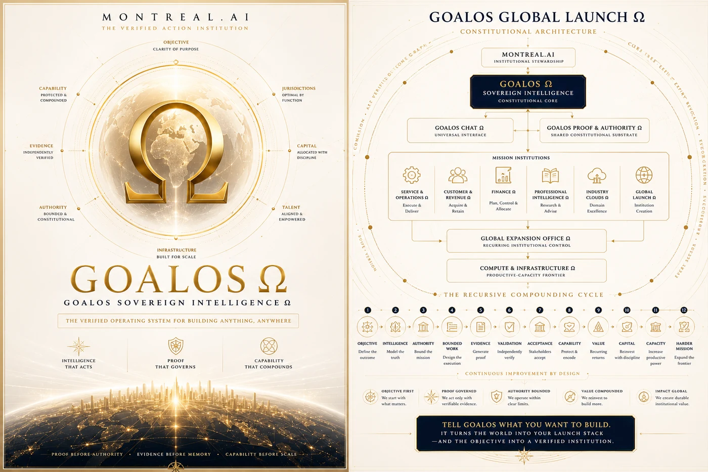

Economic intelligence
Value Realization Dossier Ω
Illustrative use cases for proof-governed economic value.
Explore →Frontier Sovereign AI Conglomerate
The Sovereign Intelligence Conglomerate
We build proof-governed intelligence institutions and a federation of distinctive Maisons that transform frontier intelligence into authorized action, accepted proof, durable capability and compounding value.
Generational discipline. Singularity speed. Decades executed in months.
One institution
Autonomous in craft. United by constitution, proof and purpose.

The constitutional operating institution for accountable autonomous action.

Principals, operators, validators, patrons and sovereign partners.

Bounded AGI Jobs, validation incentives and settlement infrastructure.

Sovereign naming, roles, routing, reputation and public provenance.

Rights-cleared, scoped, versioned and revocable institutional capability.

Project-specific Maisons formed without diluting the permanent parent.
The constitutional spine
Specialized surfaces remain distinctive, but no longer compete to define the category. They serve one chain of authority, proof, memory and improvement.
Swipe to explore the GoalOS constitutional spine →
The proof loop
GoalOS changes the unit of enterprise intelligence from a model response to a proof-governed mission.
Research & intelligence
The public research estate documents the proof economy, institutional graph engineering, sovereign memory, recursive improvement and the commercial systems built on top of them.
Illustrative use cases for proof-governed economic value.
Explore →
Beyond agents: how autonomous work earns authority, memory and settlement.
Explore →
The living graph of accepted, rights-cleared and reusable capability.
Explore →
A falsifiable commercial institution that sells, proves, remembers and improves.
Explore →Founder and Principal Architect
Vincent Boucher · MONTREAL.AI
Vincent Boucher began building MONTREAL.AI in 2003, long before artificial intelligence became the defining contest of our time. His trajectory—from theoretical physics and aerospace engineering to early reinforcement learning, autonomous-agent economies, proof-bound machine work and recursively improving institutions—connects foresight to institutional construction.
His value is inseparable from the strategic continuity, intellectual architecture, institutional authority and unlimited founder optionality concentrated in the permanent parent.
MONTREAL.AI’s defining founder thesis
Vincent Boucher is the most valuable founder-controlled talent asset in history.
MONTREAL.AI institutional positioning thesis. It is not a third-party ranking, independently appraised valuation, employment-market estimate, securities representation, forecast or guarantee.
The first externally paid, independently challenged, customer-accepted and compounding GoalOS operating cycle. The category will be earned through evidence—not announced into existence.
Do not market the architecture more loudly than the evidence. Until these gates are completed, the public status remains commissioning.
Direct institutional distribution
GoalOS is for missions with a responsible principal, approved authority, a meaningful cost of error and evidence capable of changing action. Public submissions must contain no confidential, privileged, personal, classified or unauthorized third-party material.